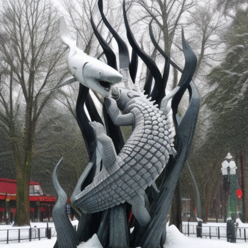
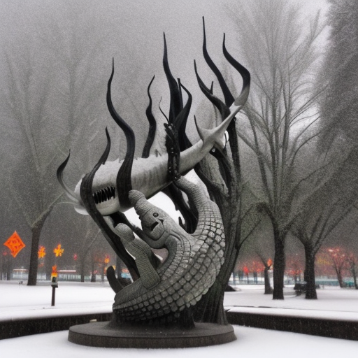

Custom Generative AI: Suroboyo Statue Fine-Tuning
"Fine-tuning a text-to-image model to recognize a specific local cultural landmark (Suroboyo Statue) using Dreambooth. The model learns to generate the subject in various artistic styles and environments while preserving its structural identity."
Project Overview
This project implements Dreambooth, a technique to personalize text-to-image diffusion models. By training the model on a small set of images (few-shot learning) of the "Suroboyo Statue", the model learns to associate a unique identifier token (suroboyostatue) with the specific visual features of the monument.
Generated Results


Prompt: "photo of suroboyostatue monument in the snow rain"
Training Pipeline
The training process utilizes Class Preservation to ensure the model doesn't forget what a general "monument" looks like while learning the specific "Suroboyo Statue".
suroboyostatue.
.ckpt format.
Technical Implementation
1. Optimization Strategy
Training Stable Diffusion requires significant VRAM. I implemented several memory-saving techniques to make it run efficiently on a Tesla T4 (16GB):
- Mixed Precision (FP16): Reduces memory usage by half without significant loss in quality.
- 8-bit Adam Optimizer: Uses quantized statistics to reduce the optimizer state memory footprint.
- Gradient Checkpointing: Trades computation for memory during the backward pass.
2. Concept Definition
The model was trained using a specific concept dictionary to differentiate the subject from generic objects:
concepts_list = [
{
"instance_prompt": "photo of suroboyostatue",
"class_prompt": "photo of a monument",
"instance_data_dir": "/content/.../suroboyostatue",
"class_data_dir": "/content/.../monument"
}
]
3. Training Hyperparameters
Key configuration used during the train_dreambooth.py execution:
- Base Model:
runwayml/stable-diffusion-v1-5 - Learning Rate:
1e-6(Constant) - Max Train Steps: 1000
- Prior Loss Weight: 1.0 (To prevent overfitting/catastrophic forgetting)